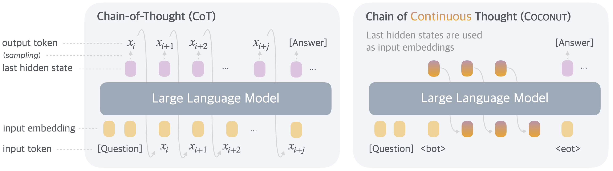
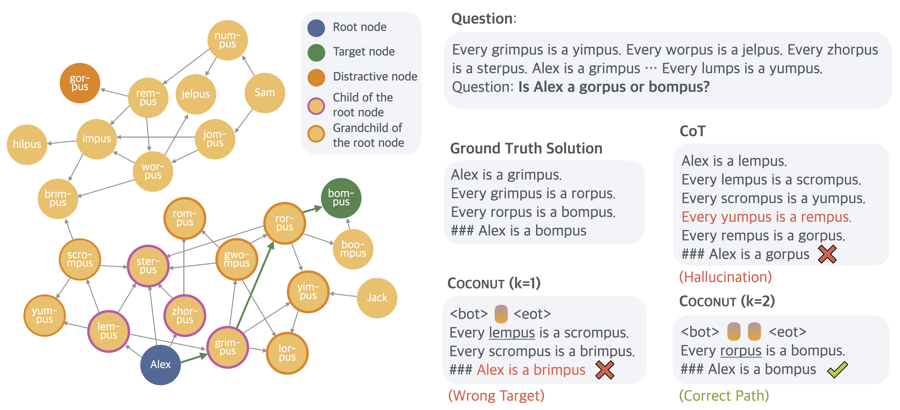
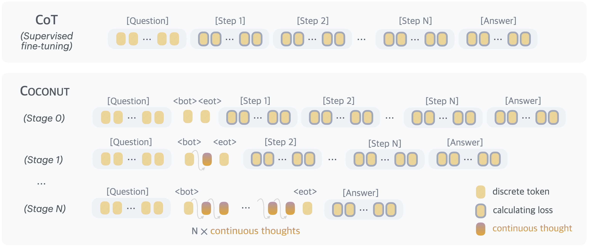
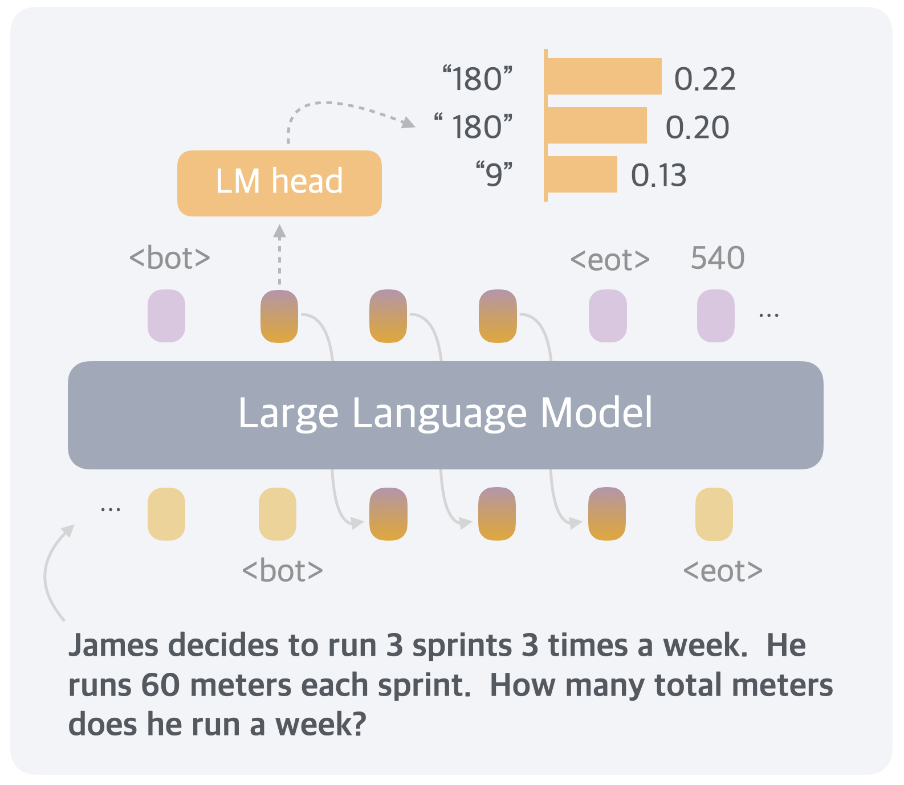
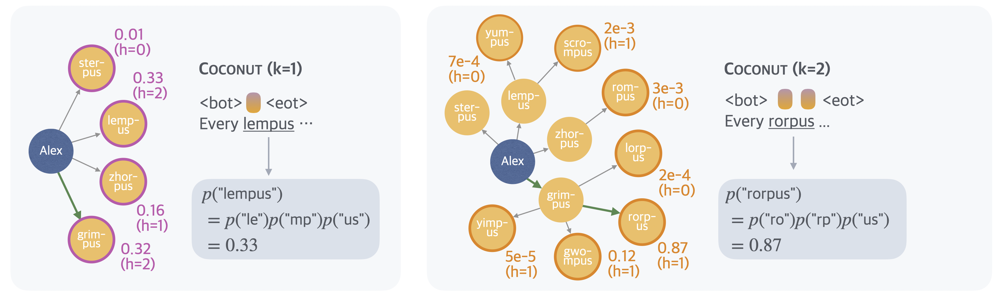

Training Large Language Models to Reason in a Continuous Latent Space (Coconut)
论文笔记: Training Large Language Models to Reason in a Continuous Latent Space (Coconut)
一句话：把 CoT 里"生成一个词 token 再喂回去"这一步，换成"把最后一层 hidden state 直接当下一个输入 embedding 喂回去"——让模型在连续空间里思考，不经过语言这个瓶颈。

我的疑问：
- 现在coding agent 和VLA遇到的问题反而是输出的token太多，而不是太少。这是不是就是这个工作现在没有那么受关注的原因。当然还有另外一个方面，即使是在coding agent上，也有一些关键决策的turn，test-time computing不够多导致决策不正确，以及如果继续增加computing可能会让决策变得更好。结合这两个方面的话，那一个基础的问题是不是现在的输出都是token-by-token的，不能做到自适应的输出，简单的东西forward一次就输出一整个句子，复杂的东西一个token要forward好几次才能决定。
- 即使是从latent reasoning的角度来看这个问题，那一个共识是LLM的浅层和深层都是在做理解和输出，中层是一个implicit的空间在负责做推理。那如果现在正常的next token prediction在遇到一些比较困难的问题的时候模型会输出一些嗯啊、啊啊的一些语气词或者说是一些那么关键的词，这个时候中间层是不是就是在增加computing，不断的再推理。从这个角度来说的话，是不是本身从token数量、啰嗦程度上，已经实现了自适应的reasoning budget。
1. 背景信息
- 作者：Shibo Hao、Sainbayar Sukhbaatar、DiJia Su、Xian Li、Zhiting Hu、Jason Weston、Yuandong Tian
- 团队：FAIR at Meta + UC San Diego（Shibo Hao 是 UCSD 学生，实习期间在 Meta 完成）。作者阵容基本是 Meta 的 planning/search 那条线（Yuandong Tian、Sukhbaatar、Weston）。
- 发表：arXiv 2412.06769，初版 2024-12，本地缓存标注 2025-08-07 修订版；cs.CL；未走正式会议，metadata 显示 arXiv.org。截至读时约 581 引用。
2. 关键问题：LLM 被迫在"语言空间"里推理，但语言不是为推理设计的；而且 Transformer 给每个 token 分的算力都一样，浪费在没信息量的连接词上
Golden Case — 问题是什么？ 论文 Figure 6 的 ProsQA 例子最能说明问题（我把它当贯穿全文的主线）。给一张 DAG，节点是虚构概念（lempus、sterpus、rorpus、bompus…），边是"every X is a Y"这种蕴含关系。问题形如：
"Is Alex a bompus or [另一个概念]？"（要从 Alex 出发，在图里找一条能走到 bompus 的路径）
从 Alex 出发第一步有四个孩子可选：{lempus, sterpus, zhorpus, grimpus}。此时模型根本没法确定该走哪个——正确路径要好几跳之后才看得出来。
用 CoT 会怎样？模型必须当场吐一个词——比如它选了 sterpus，但 sterpus 是个叶子节点（死胡同），走到底发现到不了 bompus，于是为了自圆其说，幻觉出一条根本不存在的边（原文："The model trained with CoT hallucinates an edge (Every yumpus is a rempus) after getting stuck in a dead end."）。这就是 CoT 的病根：信息不足时就被逼着把话说死（premature commitment），错了还没有便宜的回退机制。
把这个例子抽象成一般性问题，有两个层面：
-
语言空间不是推理的最优载体（why 层面）
- 神经科学证据：人做推理任务时，大脑"语言网络"基本不激活（Amalric & Dehaene 2019 等）；语言是为沟通优化的，不是为思考（Fedorenko et al. 2024, Nature）。
- 直接推论：既然人推理时不靠语言，为什么要强迫 LLM 把每一步推理都翻译成词？
-
算力分配不均（architecture 层面）
- CoT 里绝大多数 token 只是为了读起来通顺（"the"、"is"、"so"），对推理本身没贡献；但 Transformer 给每个 token 分的算力几乎一样（一次前向）。
- 反过来，少数真正要做规划/搜索的关键 token，也只有一份算力。结果算力花在没用的连接词上，难的决策点反而不够。
-
之前的方法卡在哪
- 让 CoT 更简洁（Madaan & Yazdanbakhsh 2022）、在关键 token 前多想一会儿（Quiet-STaR, Zelikman 2024）——都还困在语言空间里。
<pause>token（Goyal 2023）、filler token "..."（Pfau 2024）——给模型加"空转"算力，但 Pfau 自己承认这类方法不扩展表达力（不像 CoT 把输出回环成输入、增加有效深度），只对高度可并行的问题有用。- 显式树搜索（ToT, RAP）——外挂搜索算法，不是模型自己学出来的，且仍在语言空间枚举。
埋个伏笔：这个动机很漂亮，但注意它把"语言对推理不最优"（神经科学结论）悄悄接到了"连续 hidden state 就是更好的推理载体"。这两者之间有 gap，后面看证据能不能补上。
3. 关键方法：把最后一层 hidden state 直接当下一步的输入 embedding（"continuous thought"），配一个多阶段课程把语言 CoT 逐步"退火"成连续思考
Golden Case — 方法怎么跑？ 还是 "Is Alex a bompus or …?" 那道题，走一遍 Coconut：
- 输入问题 token → 紧跟着插一个
<bot>（begin of thought）。- 进入 latent mode：模型做一次 forward，拿到最后一层 hidden state $h$。不过 language head、不 decode 成词，直接把 $h$ 当下一步的输入 embedding 喂回去。这就是第 1 个 continuous thought。
- 关键点：这个 $h$ 不是一个确定的选择，而是能同时编码"lempus / zhorpus / grimpus 都有可能"的叠加态。把 $h$ 强行探针回语言空间（Section 5.3），四个孩子的隐式"价值"分别是 lempus=0.33、grimpus=0.32、zhorpus=0.16、sterpus=0.01——模型第一步就几乎排除了死胡同 sterpus，但在剩下三个之间保留了不确定性（这就是"不把话说死"）。
- 再喂回去做第 2 个 continuous thought：搜索前沿推进到孙子节点，分布收窄、聚焦到 rorpus。相当于在连续空间里做了一层"软" BFS——先广撒网、再逐层剪枝。
- 攒够设定数量的 continuous thought 后，插
<eot>（end of thought），切回 language mode，把答案（或剩余推理链）用词写出来。对照 Figure 6：CoT 幻觉出假边；Coconut(k=1) 走到错误终点；Coconut(k=2) 正确解出。多想一步 latent thought，就把"过早承诺"往后推一步，等搜索树展开到更接近叶子、更容易判断对错时再决策。

下面是形式化和工程细节。
3.1 数学形式化
标准 LLM（记号）：
$$H_t = \text{Transformer}(E_t)$$ $$\mathcal{M}(x_{t+1}\mid x_{\le t}) = \text{softmax}(W h_t)$$
- $E_t = [e(x_1), ..., e(x_t)]$：位置 1..t 的 token embedding 序列，$e(\cdot)$ 是 embedding 查表函数。
- $H_t \in \mathbb{R}^{t\times d}$：所有位置的最后一层 hidden state 矩阵；$h_t = H_t[t,:]$ 是位置 t 的最后一层 hidden state。
- $W$：language model head（hidden → vocab logits）。
Coconut 的唯一改动：latent mode 里，用上一个位置的 hidden state 替换本该查表得到的 input embedding。设 latent 段落在位置 $i$ 到 $j$（$x_i=$<bot>, $x_j=$<eot>）：
-
当 $i < t < j$（latent mode 内）： $$E_t = [e(x_1), ..., e(x_i), \; h_i, h_{i+1}, ..., h_{t-1}]$$ 即从
<bot>之后，输入不再是 token embedding，而是前一步的 hidden state。 -
当 $t \ge j$（退出 latent mode）：恢复用 token embedding $$E_t = [e(x_1), ..., e(x_i), \; h_i, ..., h_{j-1}, \; e(x_j), ..., e(x_t)]$$
符号细节 / 复现要点：
- latent 段落里 $\mathcal{M}(x_{t+1}\mid x_{\le t})$ 是没有定义的（不打算映射回语言）——但 $\text{softmax}(W h_t)$ 仍可算出来，Section 5 的探针分析全靠这个。
- $h_t$ 已经过最后的 normalization 层，量级不会爆——这是能直接当 embedding 喂回去而不炸的关键工程前提。[复现时如果 base model 的 final norm 位置不同要注意]
3.2 训练流程：多阶段课程（借自 iCoT / Deng 2024）

核心难点：continuous thought 没有直接监督信号（它不对应任何词）。解法是借语言 CoT 数据搭梯子，分阶段把语言步替换成 latent 步。
- 数据形态：
问题 + 语言推理链（分步）+ 答案。 - Stage 0：普通 CoT，全程语言。
- Stage k：把 CoT 的前 k 个推理步替换成 $k\times c$ 个 continuous thought。
- $c$ = 一个语言推理步换成几个连续思考（超参）。
- 若某条链短于 k 步，就把语言步全删光。
<bot>/<eot>包裹连续思考，且不计入 c。
- 切换阶段时重置 optimizer 状态（跟 iCoT 一致，重要 trick）。
- 损失：普通 NLL，但mask 掉问题和 latent thought 上的 loss，只在连续思考之后剩余的 token 上算交叉熵。
- 关键设计判断（原文强调）：目标不是让 continuous thought 去压缩/重建被删掉的那句语言推理，而是facilitate the prediction of future reasoning——所以模型可能学出比人类语言更高效的推理表示。这是 Coconut 和"把 CoT 蒸馏进 hidden"这类工作的本质区别。
训练算力细节（复现关键，容易踩坑）：
- 当前阶段安排了 $n$ 个 latent thought，就要做 $n+1$ 次 forward pass：每次 forward 产出一个新的 latent thought，最后再多做一次在剩余文本上算 loss。
- continuous thought 全程可微，梯度能 back-prop 穿过这 $n$ 次 forward。
- 可以用 KV cache 省重复计算，但这 $n+1$ 次 forward 本质是串行的、难并行——作者明说这是训练效率瓶颈，留作 future work。
实验超参（全部实验）：base model = 预训练 GPT-2（Radford 2019，参数量原文未给，GPT-2 small 通行值 124M [?]）；lr = $1\times10^{-4}$；effective batch = 128；greedy decoding。
- Math（GSM8k）：$c=2$，初始阶段外 3 个 stage + 1 个额外 stage（去掉全部语言链、处理 >3 步长尾），初始 6 epoch，其余每 stage 3 epoch。
- Logic（ProntoQA/ProsQA）：$c=1$，初始外 6 个 stage（最大 6 步），每 stage 5 epoch。
- 所有数据集跑到第 50 epoch，按验证集选 checkpoint。
3.3 推理流程
- 问题 token 之后立刻插
<bot>，进入 latent mode。 - 何时插
<eot>（退出 latent）？ 两个策略：(a) 训一个二分类器在 latent thought 上决定何时停；(b) 直接 pad 到固定长度。作者说两者效果相当（未给具体数字对比），为简单起见实验用 (b)：latent thought 数量手动设成跟最终训练阶段一致。 - 全程 greedy decoding。
3.4 与已有方法的本质区别 / tradeoff
- vs CoT：CoT 把 hidden→token→embedding 绕一圈（离散、要 argmax/采样、把话说死）；Coconut 直接 hidden→embedding（连续、可微、能保叠加态）。代价：latent thought 不可读、训练要串行多次 forward。
- vs
<pause>/filler token：pause token 只是加"空转算力"、参数是共享的固定 embedding；Coconut 的 continuous thought 是依赖上下文、每步不同的动态表示。GSM8k 上 Coconut(34.1) 远超 pause-as-thought(24.1)，说明对步间强依赖的问题，"内容"比"纯算力"重要。 - vs iCoT（Deng 2024）：iCoT 也逐步删语言链把 CoT"内化"，但它删到最后什么中间表示都不留、直接出答案；Coconut 在删掉的位置填入连续思考作为显式（但不可读）的推理状态。两者训练课程理念相近，Coconut 借了 iCoT 的"分阶段 + 重置 optimizer"。作者也承认 iCoT 更细粒度（逐 token 删）可能让训练更稳，"combining iCoT and Coconut" 是 future work。
4. 数据集：一个真实数学（GSM8k）+ 两个合成逻辑（ProntoQA + 自建 ProsQA），后者专门为"需要大量规划搜索"设计
- 训练数据
- GSM8k（Cobbe 2021）：小学数学应用题，唯一"真实/开放域"的任务。训练用 Deng et al. 2023 生成的合成 CoT 数据。规模：train 385,620 / val 500 / test 1319（Table 3）。
- ProntoQA（Saparov & He 2022）：5-hop、虚构概念名，树状本体用自然语言描述成已知条件，判断陈述真假。规模：9,000 / 200 / 800。
- ProsQA（本文自建，Proof with Search QA）：作者认为 ProntoQA"干扰分支太小、不太需要复杂规划"，于是用随机生成的 DAG 重构，强迫模型在图上做实质性搜索。规模：17,886 / 300 / 500。
- ProsQA 构造细节（Algorithm 1，复现要点）
- 二元问题："Is [Entity] a [Concept A] or [Concept B]?"，保证从 Entity 到 A 有路径、到 B 没有。
- 增量建 DAG，每加一个新节点用
poisson(1.5)决定入边数。 - 用 label 的按位 OR 追踪每个节点是"节点0后代(1)/节点1后代(2)/都是(3)/都不是(0)"，并以概率强制新节点不能同时是 0 和 1 的后代——防止 model shortcut、保持两族节点分离且规模平衡。
- 采样权重
depth_to_root(c)*1.5+1，偏向更深的节点，让解链更长（更难）。 - 无父节点的分实体名，其余分概念名；node0 当 Entity，叶子 label1/label2 当 Concept A/B，A/B 随机置换避免位置偏差。
- 图统计（Table 2）：平均 23 节点、36 边、最短路径长 3.8、最短路径数 1.6。
- 评估：主指标 = 最终答案 accuracy；辅指标 = 每题新生成 token 数（效率）；Appendix 8 给了 A100 上 batch=1 的墙钟时间。Section 5 的细粒度分析额外定义了 6 类推理过程标签（Correct Path / Longer Path / Hallucination / Wrong Target / Correct Label / Incorrect Label），只在 ProsQA 上做。
审稿人重点：核心 claim（"latent 在规划密集任务上赢 CoT"）唯一强证据来自作者自己造的 ProsQA。而且 ProsQA 的构造明确"偏向更深节点、让推理链更长"——数据集是朝着"利于展示 planning 优势"的方向设计的，不是中立 benchmark。
5a. 关键结果（主实验）：连续思考能像 CoT 一样"链式"增强推理；规划密集任务上甚至超过 CoT 且 token 少得多；但连续推理必须靠课程学习引导，端到端学不出来
主表（Table 1，Acc.% ± std / 平均生成 token 数）：
| Method | GSM8k Acc | GSM8k Tok | ProntoQA Acc | ProntoQA Tok | ProsQA Acc | ProsQA Tok |
|---|---|---|---|---|---|---|
| CoT | 42.9±0.2 | 25.0 | 98.8±0.8 | 92.5 | 77.5±1.9 | 49.4 |
| No-CoT | 16.5±0.5 | 2.2 | 93.8±0.7 | 3.0 | 76.7±1.0 | 8.2 |
| iCoT | 30.0* | 2.2 | 99.8±0.3 | 3.0 | 98.2±0.3 | 8.2 |
| Pause Token | 16.4±1.8 | 2.2 | 77.7±21.0 | 3.0 | 75.9±0.7 | 8.2 |
| Coconut (Ours) | 34.1±1.5 | 8.2 | 99.8±0.2 | 9.0 | 97.0±0.3 | 14.2 |
| - w/o curriculum | 14.4±0.8 | 8.2 | 52.4±0.4 | 9.0 | 76.1±0.2 | 14.2 |
| - w/o thought | 21.6±0.5 | 2.3 | 99.9±0.1 | 3.0 | 95.5±1.1 | 8.2 |
| - pause as thought | 24.1±0.7 | 2.2 | 100.0±0.1 | 3.0 | 96.6±0.8 | 8.2 |
（*iCoT 的 GSM8k 30.0 是从 Deng et al. 2024 直接引的，非本文复现。）
- 结论 1：连续思考可以"链式"增强推理。 GSM8k 上把 $c$ 从 0→1→2 性能单调上升（Figure 3），说明 CoT 那种"输出回环成输入、增加有效深度"的 chaining 效应在 latent 空间也成立。Coconut(34.1) > iCoT(30.0) > pause-as-thought(24.1) > No-CoT(16.5)，对"步间强依赖"的数学题，动态连续表示比纯加算力有效。
- 注意 $c=3$ 会掉点且方差变大：一次加 3 个连续思考（尤其最后阶段切换时）会让 training loss 尖峰、不稳定（Appendix 9 "Using More Continuous Thoughts"）。
- 结论 2：规划密集任务上 latent > language。 ProsQA 上 CoT(77.5) 相比 No-CoT(76.7) 几乎没提升——因为 CoT 是语言的、短视的；而 Coconut(97.0)、iCoT(98.2)、甚至各变体都大幅提升。GSM8k/ProntoQA 分支简单、下一步好猜，所以差距不明显；ProsQA 的随机 DAG 才真正考验规划。
- 结论 3：LLM 学 latent reasoning 仍需引导。 Coconut w/o curriculum（直接拿最后阶段"只有问答"的数据端到端训）在所有任务上都≈No-CoT（GSM8k 14.4，ProntoQA 崩到 52.4），说明梯度下降自己学不出有用的连续思考，多阶段课程是必需的。这是全文最强的一条 ablation。
- 结论 4：Coconut(k=0) 都比 CoT 强。 即使强制 Coconut 全用语言输出完整链，ProsQA 上仍比 CoT 准、幻觉更少。作者归因于"混合各阶段数据"的训练让模型学会 plan ahead，而 CoT 的目标永远聚焦"下一步"、导致短视（呼应 multi-token prediction, Gloeckle 2024）。
- 效率（Appendix 8, Table 4，A100 batch=1，秒/题）：No-CoT 0.03–0.08；CoT 0.26–0.85；Coconut 0.09–0.15。墙钟时间大致正比于生成 token 数，Coconut 显著快于 CoT。
[?] Section 5 用的是重训变体：Section 5.1 为解决"遗忘早期 stage"，把训练改成"以 p=0.3 概率混合其他 stage 数据"重训了一个变体，Figure 5 的插值结果来自这个变体、不是主表模型。论文自己没把这个区别讲清楚，容易让人以为 Figure 5 就是主模型。
5b. 关键结果（可解释性 / BFS 机制）：探针 → 隐式 value function → 节点高度相关性，把"latent 为什么利于规划"做成了机制解释
这一段是全文最有意思的部分，本质是一条递进链：把不可读的 latent thought 探回语言空间 → 定义出隐式价值函数 → 用图论量（节点高度）解释优势来源。
- 连续思考 = 高效推理表示（Figure 4 case）：GSM8k 一道题 $3\times3\times60=540$，第一个 continuous thought 探回语言 top token 是 "180"/"9" 这类中间变量——它同时编码了 $3\times180$ 和 $9\times60$ 两条 trace 的分布。

- 插值分析（Figure 5）：手动设
<eot>位置控制用 $k$ 个 latent thought（$k\in 0..6$），在"全 latent"和"全语言"之间插值。随 $k$ 增大，ProsQA 准确率和"正确路径率"上升，幻觉/错误终点率下降。（注意：来自上面 [?] 的 p=0.3 重训变体。） - 隐式 value function（Figure 7）：把 latent thought 探针回语言空间，得到每个前沿节点的隐式"价值"。第一步四个孩子：lempus 0.33、grimpus 0.32、zhorpus 0.16、sterpus 0.01——模型第一步就排除叶子 sterpus，其余保留不确定。
- 探针方式 = "强制 $k=1$ 切回语言、看 [Concept] 填空概率"。

- 并行性分析（Figure 8）：第一步 top-1/2/3 候选累积价值的 gap 大（保留多路探索），第二步 gap 收窄（转向聚焦）——量化了"先广后窄"的搜索行为。
- 为什么 latent 更利于规划（Section 5.4, Figure 9）：定义节点"高度"= 到最近叶子的距离。模型对低高度节点（探索潜力有限、好判断）赋值准确；高度越高越难判。所以"推迟决策、把 latent 推理展开到更接近叶子"让对错更容易区分——这是 latent BFS 优势的机制解释。
- [?] 原文内部矛盾：Figure 7 caption 写高度是 "the longest distance to any leaf nodes"，Section 5.4 正文写 "the shortest distance to any leaf node"。两处定义相反，论文自身瑕疵。本笔记取正文的"shortest"。
对这套机制分析的定性判断（融合两版分歧后的裁定）：这是漂亮的分析框架，但要清醒——它是事后探测 + 单 case + 相关性的。value function 那组数字（0.33/0.16/0.32/0.01）来自 Figure 7 一个 case；探针方式用语言空间的输出反推 latent 里有什么，本身带循环论证味道（你没法证明 latent 真在做 BFS，只能证明"此刻切回语言分布长这样"）；Figure 8/9 是聚合相关，不能排除"模型只是对简单节点更自信"这个更平凡的解释。所以"BFS emerges"是很强的叙事，证据是 correlational 的，不是因果的。
5c. 审稿人视角：最强攻击点（按杀伤力排序）
- "outperforms CoT" 主要被合成任务撑起。 唯一真实任务 GSM8k 上 Coconut 34.1 明显输给 CoT 42.9（差 8.8）。赢 CoT 只发生在 ProntoQA/ProsQA，而 ProsQA 还是作者自造、朝有利方向设计的。不过要公道说：abstract 原话是 "outperforms CoT on certain logical reasoning tasks that require substantial search during planning"——用了 "certain" 明确 hedge，所以技术上没说谎，但标题给人的整体印象比事实乐观。同时作者确实把负面结果（w/o curriculum 崩、$c=3$ 崩、iCoT ProsQA 反超）都写进了正文，这点算诚实。
- 在 Coconut 自己主打的规划任务上，它甚至不是最好的方法。 ProsQA：iCoT 98.2 > Coconut 97.0；ProntoQA：iCoT 99.8 = Coconut 99.8（pause-as-thought 甚至 100.0）。主推的方法在自己设计来展示优势的 benchmark 上被更简单的 iCoT 压一头，正文只用"a small gap ... iCoT 逐 token schedule 更细"轻描淡写带过。
- continuous thought 本身的贡献存疑——真正干活的可能是 curriculum（有原文背书）。 合成任务上 w/o thought（纯课程、零 continuous thought）ProntoQA 99.9 / ProsQA 95.5，pause-as-thought（固定 pause token）ProsQA 96.6，都几乎追平完整 Coconut。原文自己承认 "the model's computational capacity may not be the bottleneck in these tasks"。只有 GSM8k 上 continuous thought 才真正拉开差距（34.1 vs w/o thought 21.6 vs pause-as-thought 24.1）——但 GSM8k 上它又整体输给 CoT。核心新颖组件唯一真正有效的场景，恰恰是它整体打不过 baseline 的场景。
- BFS / value function / latent tree search 全是事后探测 + 单 case + 相关性（详见 5b 末尾的裁定），不是因果证据。
- 规模证据不足，但不是"完全没有"。 主实验全在 GPT-2 上。metadata idx 9 "More Discussion" 显示已扩到 Llama：GSM8k 上 Llama 3.2-3B +31.7%、Llama 3-8B +43.6%（均为 over no-CoT，metadata tldr 明说 "modest compared to language-based CoT"）。[?] 我拿到的 fulltext §9 是 "Using More Continuous Thoughts"（讲 $c=3$ 不稳定），不含这段 Llama 结果，疑似不同 arXiv 版本差异，数字来自 metadata、未在 fulltext 交叉核到。即便属实，也只给了 over-no-CoT 的增益，缺同规模 CoT 的公平对比，所以"latent 能 scale 且超过 CoT"仍未被证明。
- "chaining scales" 的证据止步于 $c=2$。 Figure 3 只到 $c\in\{0,1,2\}$；Appendix 9 承认 $c=3$ 出现 loss spike、掉点、方差变大。所谓"chain more thoughts to solve harder problems"的可扩展性，在 $c=3$ 就断了，与 CoT 能拉很长形成反差。
- 效率对比挑了对自己有利的参照物。 "fewer tokens" 只相对 CoT 成立。相对 No-CoT 和 iCoT，Coconut 反而更贵（GSM8k 8.2 vs 2.2；ProsQA 14.2 vs 8.2），而 iCoT 在 ProsQA 上又更准。合成任务上真正的效率-精度前沿点是 iCoT，不是 Coconut。
- 训练算力不对等，未做 compute-matched 对比（隐蔽的 confound）。 Coconut 每条样本要 $n+1$ 次前向、梯度穿过全部前向，每样本训练算力显著高于 CoT/iCoT baseline。精度增益里有多少来自"方法"、多少来自"更多训练算力"，无法分离。两版原始笔记都只把 $n+1$ forward 当效率短板，没质疑它污染公平性——这比"GPT-2 太小"更隐蔽。
- 所有 baseline 都是单次 greedy，CoT 被人为削弱。 全程 greedy decoding，没有 sampling / self-consistency。CoT 恰恰最擅长用 token 换准确率（self-consistency 在 GSM8k 上通常大涨）。"Coconut 更省 token"的 accuracy-efficiency 前沿，是在"CoT 只准开一枪"的前提下画的。
- 统计严谨性中等偏弱。 有 std（说明多 seed），但没写具体 seed 数，无法判断 ±1.5 这类差距的显著性。ProntoQA 上 Coconut 99.8±0.2 vs w/o-thought 99.9±0.1 vs pause-as-thought 100.0±0.1 完全在噪声内，正文却都算作成功。（注：Pause Token 在 ProntoQA 的 ±21.0 大方差是那个 baseline 自己的问题，不算 Coconut 的罪状。）
6. Insights
6.1 对论文本身的 Comments
- 东边西边都撑不起标题（最锋利的一条）：整篇的证据结构是——"东边（GSM8k）证明 continuous thought 有用，但整体打不过 CoT；西边（ProsQA）打得过 CoT，但证明不了是 continuous thought 的功劳（curriculum 可能才是主力）"。两块证据没法同时成立地支撑"latent reasoning 超越语言"这个标题级 claim。审稿要练的直觉：先看真实任务上的绝对排名，再看合成任务；先看 ablation 里核心组件的独立增量，再看整体数字。
- 最反直觉、我大概率想不到的设计：把 hidden state 直接当 embedding 喂回去，而不加任何"重建被删语言步"的辅助 loss。直觉上你会想给 continuous thought 一个监督锚点，但作者明确反对——他们要"预测未来推理"而非"压缩过去"。这个决策放弃了可解释性/可控性，换来"模型自由发明比语言更高效表示"的空间。是有品味的取舍。
- 训练时反而更依赖语言，这是最有信息量的负结果：w/o curriculum 直接崩到不如 No-CoT。等于作者自己承认"让模型端到端用梯度下降学连续推理"这个最优雅版本不 work，必须靠语言 CoT 做拐杖一步步退火。反转很妙：Coconut 是推理时摆脱语言，训练时却更依赖语言监督。
- 想不到但要打折扣的分析手法：用"强制切回语言、读填空概率"把不可读 latent thought 探成隐式 value function，再用 node height 做相关性论证"为什么 latent 利于规划"（5b）。框架很巧，但它是解释性、correlational 的，不能证明 latent 内部真在跑 BFS。典型的"漂亮故事 > 硬证据"。
- 要警惕的叙事修辞：abstract/intro 反复用神经科学"人推理时语言脑区不激活"来 frame。这是很强的 motivation，但和"连续 hidden state 是更好载体"之间没有逻辑必然——它论证的是"不该只用语言"，不是"该用 last hidden state 喂回去"。读的时候把动机的说服力和方法的证据分开看。
- 两个变量缠在一起（做得不好的地方）：continuous thought（核心新颖点）和 multi-stage curriculum（借来的）没做干净的分离对照。真正干净的 thought 独立增量只在 GSM8k 显现，而那个任务它整体又输 CoT。作者自己列了"continuous thought + iCoT 细粒度 schedule"为 future work，说明这个 confound 是知道的、只是没解。
6.2 对未来的预测
- 这条线（latent/continuous reasoning）后续大概率往两个方向走：(a) 在大模型上重做、并给同规模 CoT 的公平对比——这是本文最大的空缺，谁补上谁定调（Llama 实验只到 over-no-CoT，不够）；(b) 把 curriculum 换成不依赖语言 CoT 的训练信号（作者点名的 "pretraining with continuous thoughts"）。
- 训练侧的 $n+1$ 串行瓶颈会催生"并行化 latent thought 训练"的工程工作——looped transformer / 隐式不动点求解那条线可能被接上。
6.3 研究品味
- 一个值得警惕的"反面"操作范式：当方法在唯一真实任务上打不过最强 baseline 时，造一个"专门展示自己优势"的合成 benchmark（ProsQA，还带防 shortcut 的按位 OR 标签机制）+ 一套漂亮的机制解释（BFS/value function/node height），能极大提升说服力和引用（581）。这不是说它作假——ProsQA 的构造很干净、机制分析很巧——而是提醒：如果本文只报 GSM8k，故事就成了"输给 CoT 的 latent 方法"；ProsQA + Section 5 的存在把它变成了旗帜性工作。 作为读者要对这种"benchmark + 机制故事"的组合有免疫力。
- 与此同时，"为假设定制干净环境"本身是高质量机制研究的正当做法：想验证规划能力，就构造一个必须规划才能解的环境，而不是在脏的真实数据上争论。关键是要同时诚实报告真实任务上的结果——这点作者做到了。
7. 连接与发现
Topic / Area：
- MOC-Latent-Reasoning — Topic（核心归属）: Coconut 是"在连续/潜在空间里推理而非语言 token 空间"这条线的奠基性工作，本 MOC 由本次后处理创建收纳该方向。
- MOC-Interpretability — Topic: Coconut 用 logit lens 把不可读的 continuous thought 探针回语言空间，构造隐式 value function 并用节点高度相关性量化连续空间中涌现的 BFS 搜索，为"latent 推理过程如何在模型内部展开"提供了机制层面的可解释性分析。
直接论文双链：
- Dynamic_Large_Concept_Models-自适应语义空间潜在推理 — 与 Coconut 近乎同源：同样在连续/潜在语义空间里推理，但把"每步用几个 continuous thought"从固定超参改成按语义空间自适应决定推理预算。
- Language-as-a-Latent-Variable-for-Reasoning-Optimization-polyGRPO — 同样把"语言/离散 token"当推理的中间变量来质疑，但 polyGRPO 走的是把语言当 latent variable 优化的路线，与 Coconut"彻底跳过语言"形成对照。